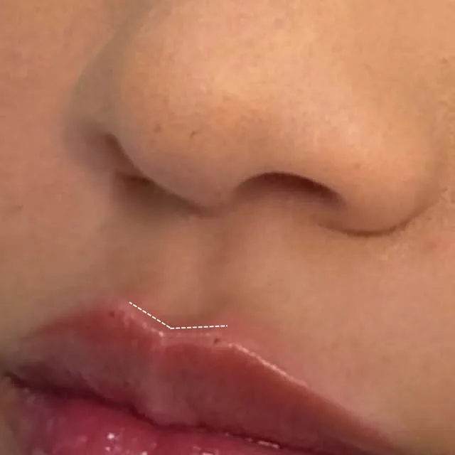
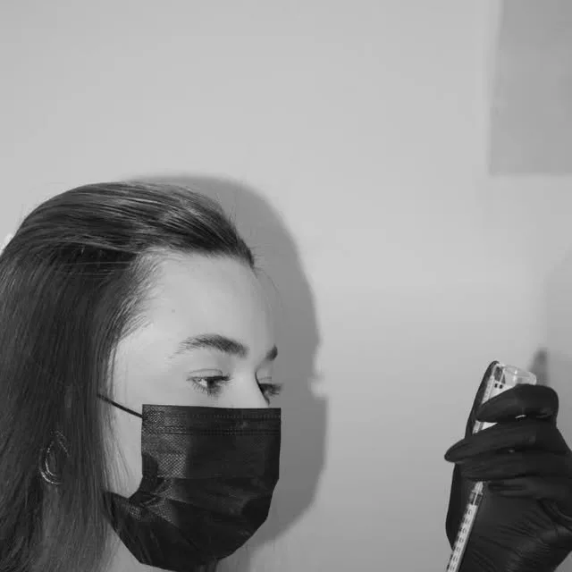

Goiânia, GO · CRO/GO 25049
Harmonização facial que respeita o seu rosto.
Nada exagerado. A Dra. Carolina Gonçalves, cirurgiã-dentista, avalia o seu rosto, explica cada indicação e só então você decide.
“Eu não quero mudar o seu rosto para encaixá-lo em um padrão, quero respeitar suas características, entender o que faz sentido para você e valorizar a sua beleza sem apagar a sua identidade.”
Prepare sua avaliação
Responda o que quiser. Montamos a mensagem e você envia pelo WhatsApp da Dra. Carolina, já com as suas dúvidas.
Como funciona a avaliação
“Do momento em que você senta até a decisão final, eu te mostro como penso, o que observo no seu rosto e por que cada indicação existe.”
- Agendamento Pelo WhatsApp (62) 99311-7395.
- Conversa e análise O que te incomoda, o que você espera e o que o seu rosto mostra.
- Plano explicado Indicação, benefícios, riscos, alternativas e acompanhamento, antes de qualquer decisão.


Dúvidas comuns
Vou ficar com o rosto diferente?
O objetivo é realçar os seus traços, não trocar por outros. Nas palavras dela: a ideia não é você sair parecendo outra pessoa.
Quanto custa?
Depende do que for indicado para o seu caso, por isso o valor é passado depois da avaliação. Pergunte pelo WhatsApp sobre a consulta.
Onde é o atendimento?
Em Goiânia. Chame no WhatsApp para saber o endereço e os horários.